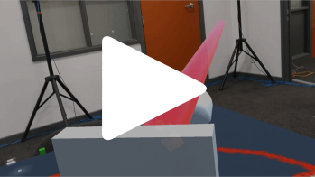
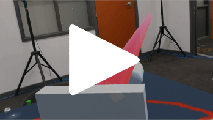

Portfolio
Mr. Marlow's Manor of Mayhem
This game was made using the Microsoft Hololens in a team of 3 over a semester.
For this project, we wanted to make a game that felt properly suited to augmented reality. Our initial ideas were essentially "we should use this pre-existing game mechanic in AR". We quickly realised this reduced the AR aspect to being just a gimmick. If an AR game can easily be played on desktop or with VR, why bother? As such, we moved towards creating game mechanics that couldn't work in just the physical world or the digital world, but needed a good combination of both.
The solution: an escape room-style game where you must outsmart a murderous clown. We thought this would be a good place to start from as escape rooms work well in the real world, but using augmented reality we could have mechanics that would not be physically practicable or possible. We created minigames that required interaction with both the real and virtual world to complete. This was done using an iterative process where prototypes were made, discussed, and kept or thrown out as necessary.
You can view our promotional poster for this game here.
 

My work
- Researched technologies needed for our project - namely the Hololens-Unity API and an image tracking library - and implemented them into our project.
- Wrote up notes to make the process of working with the Hololens easier for other members.
- Setup a system that allowed communication between the host PC and the Hololens using UDP. This was needed to transmit objects tracked using motion capture to the Hololens.
- Setup a system that uses markers on the walls to calibrate where the Hololens should render things. This allowed us to say that e.g. coordinates (1, 0, 1) in the game world will line up with a certain corner of the room.
- Created some minigames:
- A real office chair can be spun to pop virtual balloons using a virtual laser coming out of its back.
- In the same vein, at a later point this same chair can be spun to attack the evil clown Marlow.
- Clown-themed boxes that force players to reach into their mouths without getting "bitten". In these I hid codes to open a padlock.
- Debugged the final product to ensure everything was stable and fully playable.